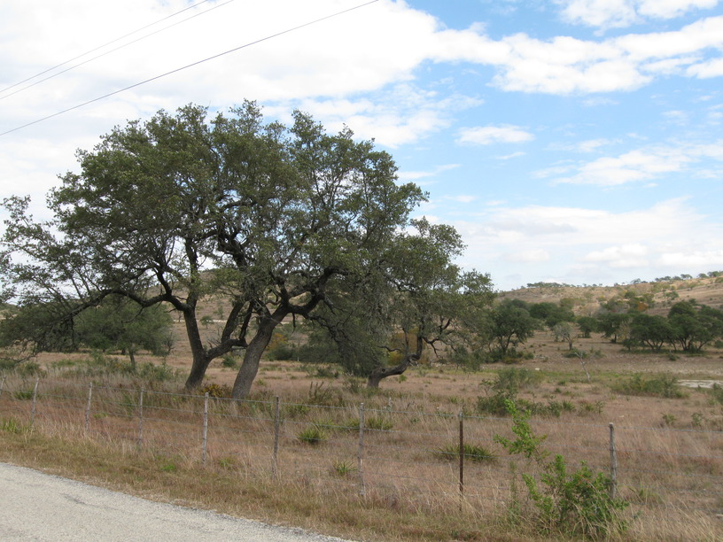

prev up next
5 Nov 2008, Comfort, TX
Stealth camping tonight, so this journal entry will take the form of a
bulleted list:
- Breakfast w/Threetons
- Headwinds!
- TX Hill Country—beautiful (hilly)
- Guy in a pickup trick: "Where're you headed? Where'd you start? Rock on. Keep livin' the dream."
View Larger Map


prev up next